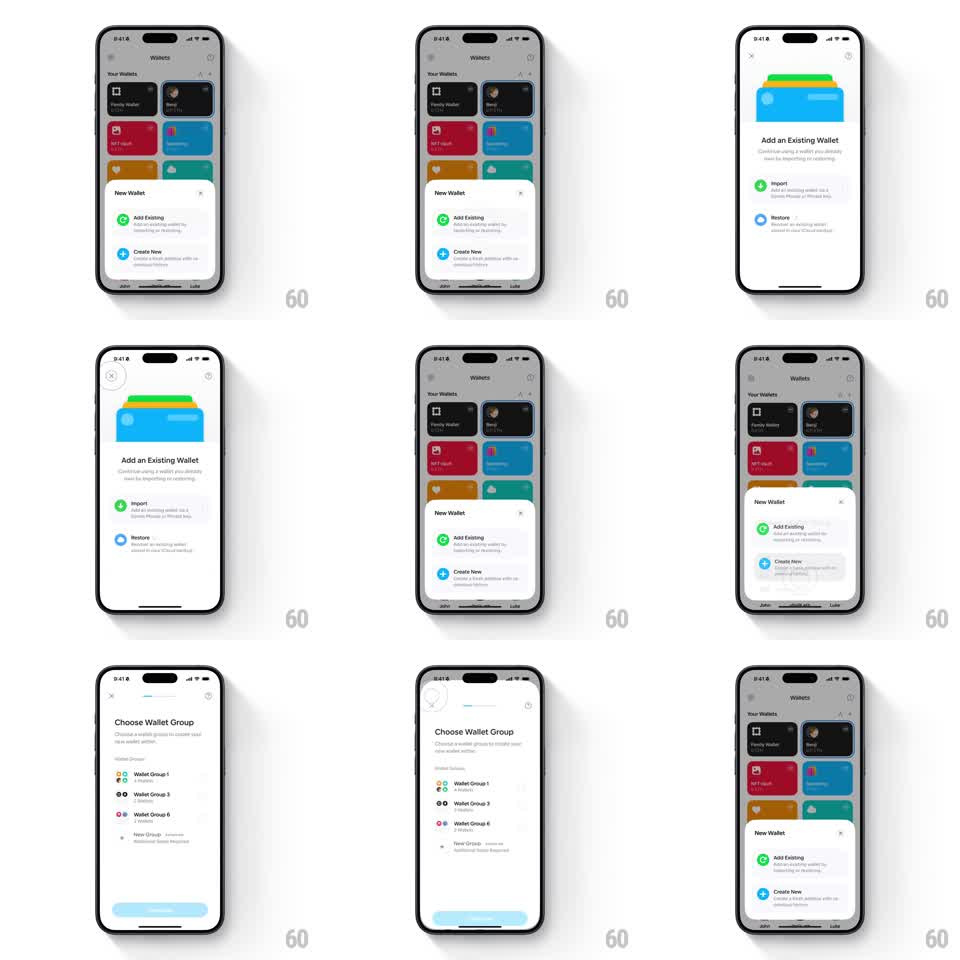

Media
Frame-by-frame

Rebuild this interaction 1:1: Family's sheet-to-fullscreen setup - from the light Wallets grid, the "New Wallet" sheet (Add Existing, Create New) expands into a full-screen "Add an Existing Wallet" flow (stacked colorful card art, Import / Restore rows), which pushes to "Choose Wallet Group", then collapses back to the grid.

Rebuild this interaction 1:1: Family's sheet-to-fullscreen setup - from the light Wallets grid, the "New Wallet" sheet (Add Existing, Create New) expands into a full-screen "Add an Existing Wallet" flow (stacked colorful card art, Import / Restore rows), which pushes to "Choose Wallet Group", then collapses back to the grid. ## Integration Integration: stack-agnostic spec - springs given as stiffness/damping, timed motions as duration + curve; map every value to your framework and animation library of choice. ## Scene Light Wallets grid (Family Wallet, Benji, NFT Vault, Base Dawg, and other colored cards). Sheet: "New Wallet" with "Add Existing" (green plus) and "Create New" (blue plus) rows. Full screen 1: "Add an Existing Wallet" - art of stacked colorful wallet cards, "Continue using a wallet you already own by importing or restoring", "Import" (green arrow, "Add an existing wallet via a Secret Phrase or Private Key"), "Restore" (blue cloud, "Restore an existing wallet saved to your iCloud Keychain"). Full screen 2: "Choose Wallet Group" - Wallet Group 1 / 3 / 6 rows with avatar clusters, New Group, Continue. ## Motion spec Pattern: sheet expanding to full screen with springy growth. - Tap "Add Existing": the sheet's top edge grows upward (spring ~280/20, 350ms) until it fills the screen - the corner radius easing from 20pt to 0, the scrim fading out - while the sheet's row content crossfades to the full-screen layout (200ms). - The stacked-cards art drops in from above (translateY -40pt -> 0, spring ~300/18) and the Import / Restore rows stagger up (60ms apart). - Tap Import: a left-push transition to "Choose Wallet Group" (300ms, ease-in-out), group rows staggering in (50ms apart) with avatar clusters popping (scale 0.8 -> 1). - Back: reverse push (300ms), then the full screen shrinks back into the sheet (reverse spring) and the sheet slides down (250ms) to the grid. ## Calibration - The growth is continuous - the user watches the sheet become the screen, no cut. - The status bar area tints to match as the sheet reaches full height. ## Reduced motion Sheet and screens crossfade (250ms) without size animation. ## Don't miss - The wallet-card stack art is three fanned cards (green, blue, yellow) - it appears only at full screen. - "Create New" is available on the sheet but the demonstrated path is Add Existing.